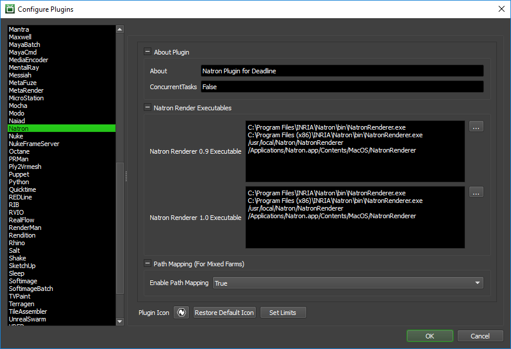

Natron¶
Job Submission¶
You can submit Natron jobs from the Monitor.
Submission Options¶
The general Deadline options are explained in the Job Submission documentation, and the Draft/Integration options are explained in the Draft and Integration documentation. The Natron specific options are:
Writer Node To Render: A custom writer node to render can be specified here. This is optional and can be left blank.
Frame List: Override the frame list of writer node frames to render. This is optional and can be left blank.
Frames Per Task: This is the number of frames that will be rendered at a time for each job task. Default is 1.
Cross-Platform Rendering Considerations¶
In order to perform cross-platform rendering with Natron, you must setup Mapped Paths so that Deadline can swap out Read Node and Write Node file paths where appropriate. You can access the Mapped Paths Setup in the Monitor while in power user mode by selecting Tools -> Configure Repository. You’ll find the Mapped Paths Setup in the list on the left.
Plugin Configuration¶
You can configure the Natron plugin settings from the Monitor. While in power user mode, select Tools -> Configure Plugins and select the Natron plugin from the list on the left.
Render Executables
Natron Executable: The path to the Natron executable file used for rendering. Enter alternative paths on separate lines. Different executable paths can be configured for each version installed on your render nodes.
Path Mapping (For Mixed Farms)
Enable Path Mapping: If enabled, a temporary Natron file will be created locally on the Worker for rendering because Deadline does the path mapping directly in the Natron file. This feature can be turned off if there are no Path Mapping entries defined in the Repository Options.
FAQ¶
Which versions of Natron are supported?
Natron 0.9 and later are supported.
Why doesn’t Deadline Worker/Monitor report Natron’s task progress?
Currently (v1.0), Natron has limited task reporting although when specifying a particular writer node and frame list then frame progress is supported.
How do I specify a frame range to be rendered?
Unfortunately, Natron does not currently support specifying a frame range to be rendered, but renders by default the settings within the Natron project file per writer node. If you optionally, specify a writer node to be rendered under advanced options in the Monitor submission UI, then it is possible to specify a particular frame range and number of frames per task for this writer node.
Error Messages and Meanings¶
This is a collection of known Natron error messages and their meanings, as well as possible solutions. We want to keep this list as up to date as possible, so if you run into an error message that isn’t listed here, please visit the Thinkbox Help Centre and let us know.
Currently, no error messages have been reported for this plugin.

{kind=link}
{kind=link}
{kind=link}